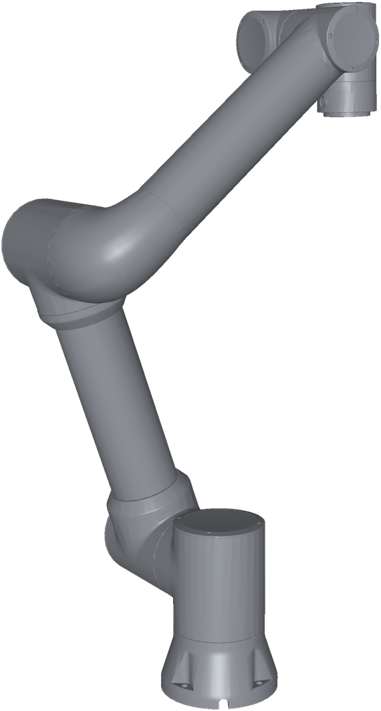
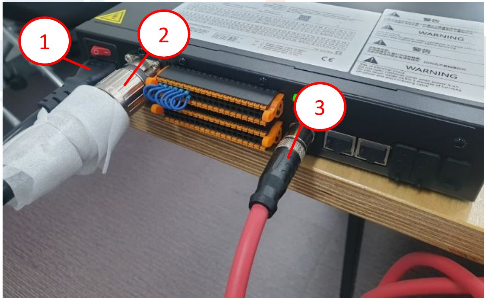
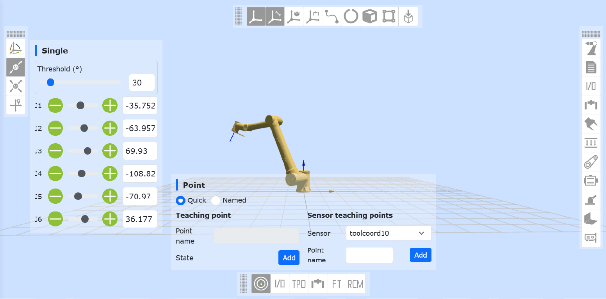
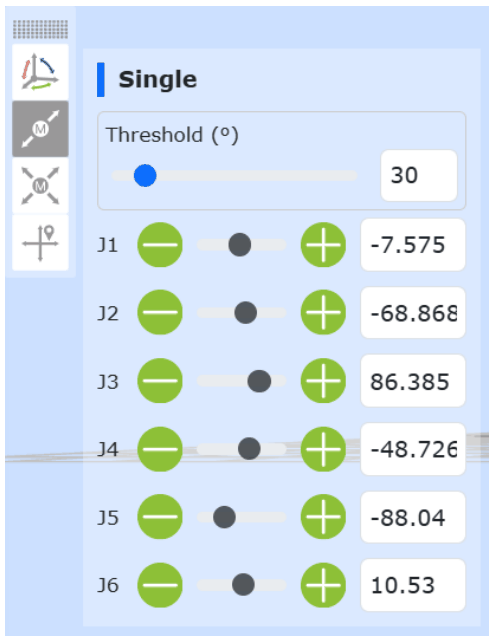
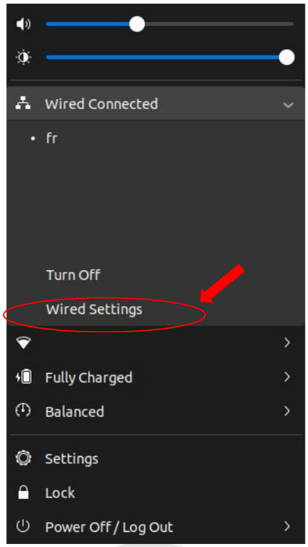
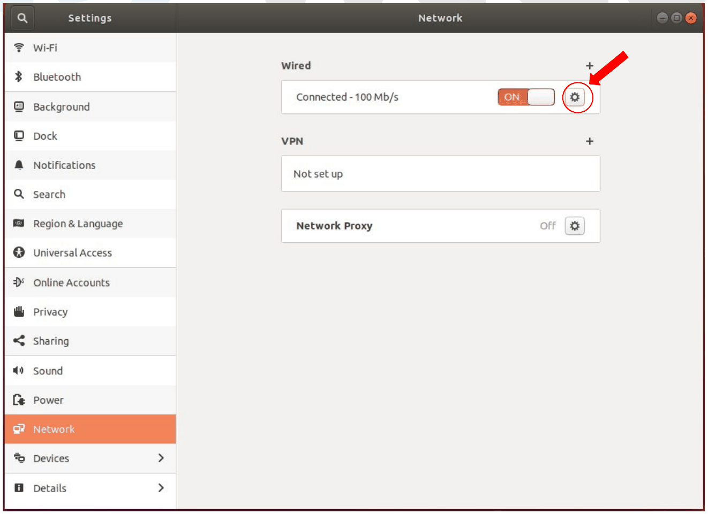
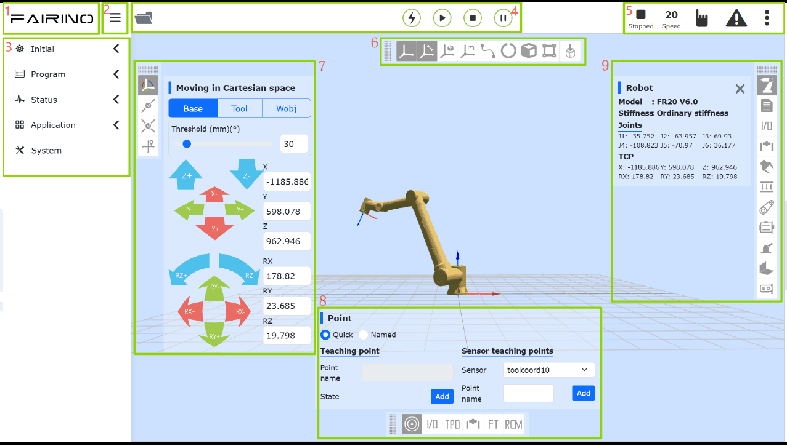
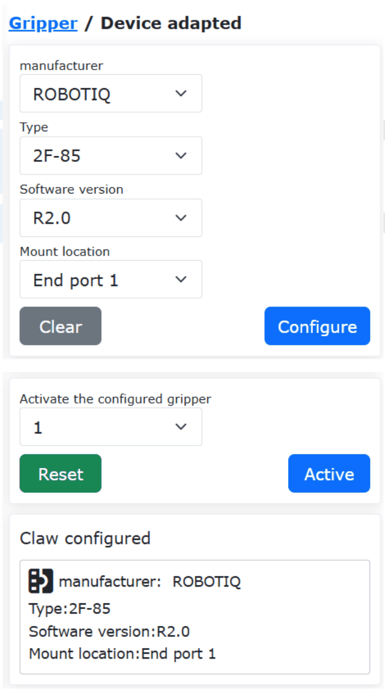
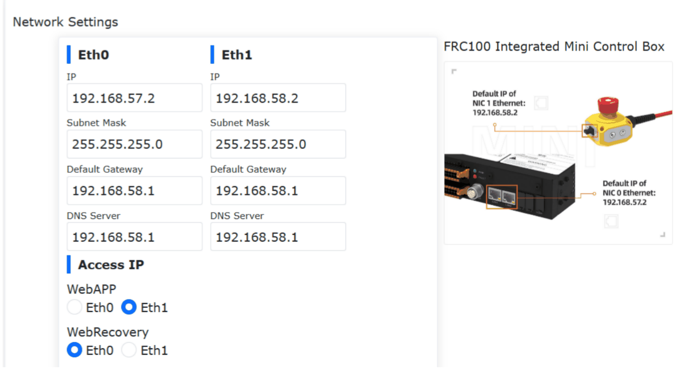

FAIRINO FR
협동로봇
구성품과 컨트롤 박스 연결, 티칭 펜던트 조작과 패킹 자세, 노트북에서 WebApp 접속, 그리퍼 설정과 접속 IP 변경, SDK 문서 찾기까지 FR 협동로봇을 처음 쓸 때 필요한 순서를 정리했습니다.

이 설명서에 대하여
| 로봇 | FAIRINO FR 협동로봇 · 컨트롤 박스 · 티칭 펜던트 |
| 근거 문서 | WeGo Robotics Fair Innovation robot 매뉴얼 (FAIRINO WebApp V4.0.0 기준, 2026.10). 더 자세한 내용은 FAIRINO 공식 문서 — fairino-doc-en.readthedocs.io/latest · 예제 — github.com/FAIR-INNOVATION. 제조사 자료(이 책에 옮기지 않음): FAIRINO Product Manual · FR 협동로봇 사용자 설명서(한국어) · ROS 2 · MoveIt 2 튜토리얼 · 제어기 소프트웨어 업그레이드 · 다운그레이드 방법 · DH Robotics AG-95 그리퍼 설명서 |
| 소프트웨어 | FAIRINO WebApp V4.0.0 |
| 판 | 한국어판 · 2026.11.18 |
| 문의 | go.support@wego-robotics.com |
본문은 WeGo가 만든 FR 협동로봇 시작 안내를 WeGo 설명서 형식으로 옮긴 것이며, 안전 수칙을 2장으로 모았습니다. 화면은 WebApp V4.0.0 기준이며, 버전에 따라 메뉴 이름과 위치가 다를 수 있습니다.
© WeGo Robotics. FAIRINO는 Fairino (Suzhou) Robot Technology Co., Ltd.의 상표입니다. 표지의 FR5 이미지는 FAIRINO가 공개한 URDF 메시(github.com/FAIR-INNOVATION/frcobot_ros, frcobot_description, package.xml 기준 Apache-2.0)를 MuJoCo로 렌더링한 것이고, 본문 그림은 WeGo 자료의 사진과 FAIRINO 소프트웨어 · 문서 화면입니다.
목차
- 01구성품
- 02중요 안전 수칙
- 03컨트롤 박스 연결
- 04티칭 펜던트로 제어
- 05웹(WebApp)에서 제어
- 06SDK로 제어
구성품
FR 협동로봇의 구성품은 다음과 같습니다. 1 ~ 5번은 그림 1의 번호이며, 6번 티칭 펜던트는 별도 상자에 들어 있습니다.
| 번호 | 구성품 | 비고 |
|---|---|---|
| 1 | FR 로봇팔 (FR robot) | |
| 2 | 전원 케이블 (power cable) | |
| 3 | 비상 정지 버튼 (emergency button) | |
| 4 | 컨트롤 박스 (control box) | |
| 5 | 볼트 4개 (bolt × 4) | 아래 사진과 다를 경우 3번과 5번이 함께 들어 있습니다 |
| 6 | 티칭 펜던트 (Teaching Pendant) | 별도 상자 |

중요 안전 수칙
이 책은 FR 협동로봇을 처음 연결하고 움직이기까지의 순서를 다룹니다. 설치하고 운용하기 전에 FAIRINO 공식 사용자 설명서의 안전 장을 먼저 읽고, 각 장의 경고 · 주의 상자를 지키십시오.
설치 환경, 작업자 안전, 안전 기능은 FAIRINO 공식 사용자 설명서의 ‘Safety’ 장과 ‘Installation’ 장의 ‘Personnel safety’ 절에 있습니다: https://fairino-doc-en.readthedocs.io/latest/CobotsManual/safety.html
이 책에 나오는 경고 · 주의는 다음과 같습니다.
- 패킹 자세로 옮길 때는 로봇의 속도를 줄이십시오.주변 환경을 점검해 로봇이 부딪힐 요인을 없앤 뒤 실행하십시오(4장).
- 그리퍼를 활성화할 때는 그리퍼를 비워 두십시오.활성화할 때 그리퍼에 물체가 없어야 합니다(5장).
- WebApp과 WebRecovery의 네트워크를 겹치지 않게 고르십시오.겹치면 WebApp에 접속하지 못할 수 있습니다(5장).
- WebRecovery에서 업그레이드 · 다운그레이드를 임의로 조작하지 마십시오.WebRecovery는 컨트롤 박스의 Eth0(192.168.57.2)에 있습니다(5장). 제어기 소프트웨어를 업그레이드 · 다운그레이드해야 하면 go.support@wego-robotics.com 으로 문의하십시오.
컨트롤 박스 연결
전원 케이블, 로봇 케이블, 비상 정지 버튼(또는 티칭 펜던트)을 컨트롤 박스에 연결합니다. 연결 위치는 그림 2과 같습니다.
| 번호 | 케이블 |
|---|---|
| 1 | 전원 케이블 (power cable) |
| 2 | FR 로봇 케이블 (FR robot cable) |
| 3 | 비상 정지 버튼 · 티칭 펜던트 (emergency button / Teaching Pendant) |

티칭 펜던트로 제어
티칭 펜던트(TP)로 로그인하고, 관절을 움직이고, 로봇을 패킹 자세로 옮기는 방법입니다.
로그인
- 티칭 펜던트를 컨트롤 박스에 연결하고 전원을 켜십시오.로그인 화면(그림 3)이 나타납니다.
- 가상 키보드를 켜십시오.화면 오른쪽 위의 노란 버튼을 누릅니다.
- 계정 정보를 입력하고 로그인하십시오.user name
admin, password123

최신 WebApp에서는 티칭 펜던트가 기본으로 꺼져 있습니다. WebApp의 시스템 설정 → 일반 설정 → 네트워크 설정에서 티칭펜던트 사용을 켜고 재부팅한 뒤 사용하십시오. WebApp 접속 방법은 5장에 있습니다.
관절 움직이기
티칭 펜던트 화면의 로봇이 실제 로봇과 같은 자세이면 연결에 성공한 것입니다.

관절(joint)마다 있는 − · + 버튼(그림 5)이나 슬라이드 바(그림 6)로 로봇을 움직일 수 있습니다.


로봇의 속도와 가속도도 설정할 수 있습니다(그림 7).

티칭 펜던트의 자세한 사용법은 별도로 제공되는 FAIRINO 사용자 설명서나 FAIRINO 공식 문서 (https://fairino-doc-en.readthedocs.io/latest/)를 참고하십시오.
패킹 자세로 옮기기
Application → Tool App → Robot packing에서 로봇을 패킹(포장) 자세로 초기화할 수 있습니다.
이 기능을 쓸 때는 로봇의 속도를 줄이고, 주변 환경을 점검해 로봇이 부딪힐 요인을 없앤 뒤 실행하십시오.
- Application → Tool App → Robot packing을 여십시오.그림 8의 화면이 나타납니다.
- 로봇을 영점으로 옮기십시오.Move to zero point의 Move를 누릅니다. 화면의 2단계 안내대로, 로봇의 기계적 영점이 맞는지와 각 관절의 주황색 원 안의 틈이 그림처럼 맞춰져 있는지 확인합니다.
- 로봇을 패킹 자세로 옮기십시오.Move to packaging point의 Move를 누릅니다.

웹(WebApp)에서 제어
노트북을 LAN 케이블로 연결하고 웹 브라우저에서 FAIRINO WebApp에 접속합니다. 그리퍼 설정과 접속 IP 변경도 WebApp에서 합니다.
노트북 연결
티칭 펜던트를 떼어 내고 비상 정지 버튼으로 바꿔 연결한 뒤, LAN 케이블을 노트북에 연결하십시오.

노트북 네트워크 설정 (Ubuntu)
- 유선 설정을 여십시오.LAN 케이블을 연결한 뒤 화면 오른쪽 위를 누르고 Wired Connected → Wired Settings를 누릅니다.

그림 10. Ubuntu 오른쪽 위 메뉴 (WeGo 자료) - Network의 Wired 항목에서 톱니바퀴를 누르십시오.

그림 11. Network 설정의 Wired 항목 (WeGo 자료) - IPv4 주소를 수동으로 설정하십시오.IPv4 탭에서 Manual을 고르고 그림 12처럼 입력합니다.
Address는 192.168.58.2를 뺀 같은 대역(192.168.58.x)의 주소로 정합니다 (그림의 예: Address 192.168.58.99, Netmask 255.255.255.0).

그림 12. IPv4 수동 설정 (WeGo 자료) - Apply를 눌러 저장하십시오.저장한 뒤 Wired 항목의 ON 스위치를 껐다가 다시 켭니다.

그림 13. Wired 스위치를 껐다가 다시 켜기 (WeGo 자료)
WebApp 접속
웹 브라우저 주소창에 192.168.58.2를 입력하고 로그인하면 그림 14의 화면이 나타납니다.

그리퍼 설정
그리퍼를 로봇에 연결한 뒤 컨트롤 박스를 켜고 WebApp에 들어가십시오.
활성화할 때 그리퍼에 물체가 없어야 합니다.
- 초기설정 → 주변기기 → 그리퍼 → Device adapted를 고르십시오.
- 사용할 그리퍼에 맞게 설정하고 Configure를 누르십시오.제조사(manufacturer), 유형(Type), 소프트웨어 버전(Software version), 장착 위치(Mount location)를 고릅니다.
- Reset → Active를 누르십시오.그리퍼가 활성화됩니다.

접속 IP 변경
시스템 설정 → 일반 설정에서 접속 IP를 바꿀 수 있습니다. 네트워크 설정을 누른 뒤 재부팅하라는 창이 뜨면 재부팅하십시오.
| 포트 | 장치 | IP | 비고 |
|---|---|---|---|
| Eth0 | 컨트롤 박스 (Control Box) | 192.168.57.2 | WebRecovery. 업그레이드 · 다운그레이드 임의 조작 금지 |
| Eth1 | 비상 정지 버튼 (Emergency Stop Button) | 192.168.58.2 | WebApp 접속 주소 |
그림 16처럼 WebApp과 WebRecovery의 네트워크를 겹치지 않게 고르십시오. 겹치면 WebApp에 접속하지 못할 수 있습니다.
Eth0(192.168.57.2)의 WebRecovery에서 업그레이드 · 다운그레이드를 임의로 조작하지 마십시오.
티칭펜던트 사용을 켜면 WebApp은 Eth1(192.168.58.2)로 고정됩니다.

SDK로 제어
SDK의 함수 설명과 최근 업데이트는 FAIRINO 공식 문서에, 예제는 FAIRINO GitHub에 있습니다.
FAIRINO 공식 문서
자세한 내용과 최근 업데이트 내용은 아래 링크에서 확인할 수 있습니다.
FAIRINO 문서: https://fairino-doc-en.readthedocs.io/latest/
접속한 뒤 왼쪽 패널의 SDK Manual에서 원하는 언어의 설명서를 고르십시오.


함수마다 설명과 예제가 있으므로, 이 자료를 참고해 개발하십시오.

개발 사례와 예제
SDK를 활용한 개발 사례 (WeGo Robotics 유튜브): https://youtu.be/YPLGYPv6cLs
관련 예제는 FAIRINO GitHub를 참고하십시오: https://github.com/FAIR-INNOVATION